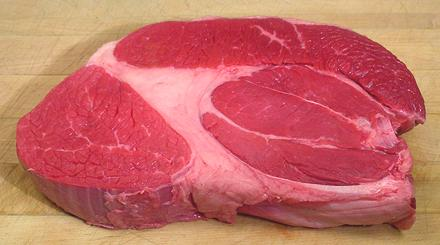

Beef Rump Roast

This cut comes from the big end of the Bottom Round. It does not much
resemble the bottom round part of our
Reference Cut because it comes from
much higher than where that cut was made, up where there are pelvic
bones that make things more complicated. This is one of the more
tender of the Round cuts.
More on Cuts of Beef.
|
Cooking: This this cut is more tender than most of the Round, long slow moist cooking is still advised. |